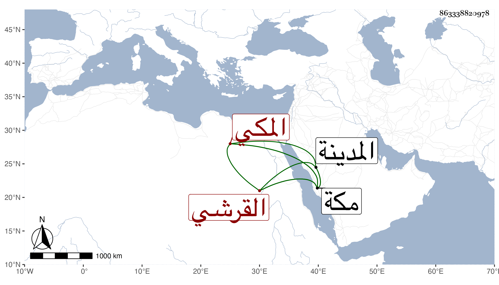

0902Sakhawi.DawLamic.ITO20230111-ara1.EIS1600.863338820978
Biography ID: 863338820978
195
محمد بن عبد الله بن العباس بن محمد بن محمد بن أبي السعود الولد الكمال أبو الفضل بن العفيف أبي السيادة بن الكمال أبي الفضل بن الجمال أبي المكارم ابن الكمال أبي البركات بن ظهيرة القرشي المكي الماضي أبوه وجده . ذكي فطن . ولد في ربيع الأول سنة اثنتين وسبعين بمكة سمع مني في سنة ست وثمانين بمكة الكثير وكتبت له ثبتا أوردت في التاريخ الكبير شيئا منه ، وكان ممن يحضر عند الجمال أبي السعود ثم ترك وزار المدينة غير مرة وربما اشتغل عند مجلى وقد زوجه والده ولم تلبث الزوجة أن ماتت بعد أن خلفت له ولدا وميراثا .
